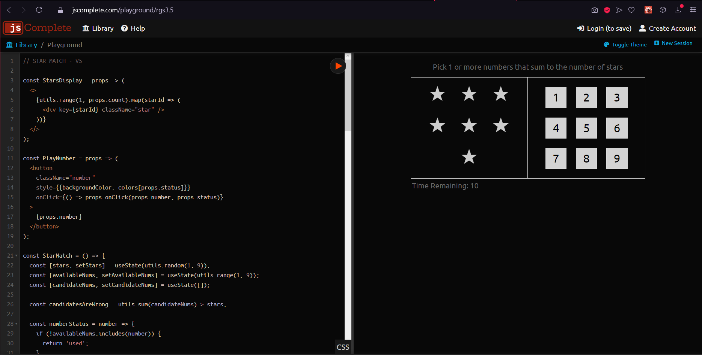

CAPITULO 5
Pone un botón para volver a jugar y se necesita una condición y esa es una condición simple que debería
determinar si el juego está
terminado y la renderización de este componente startsDisplay solo debería ocurrir si el juego no está
terminado y si el juego está
terminado se debería renderizar algo más el botón de Reproducir de nuevo y con esto podemos decir que el
juego termina cuando el
nums.length disponible es igual a 0, esa es la condición que se necesita para saber que el juego esta
terminado, si la condición es
verdadera toca renderizar el juego nuevamente con la lógica de la interfaz de usuario y si la condición
es falsa se necesita renderizar
la lógica startsDisplay que teníamos antes y si hay un componente PlayAgain y lo representamos la
condición es verdadera.
